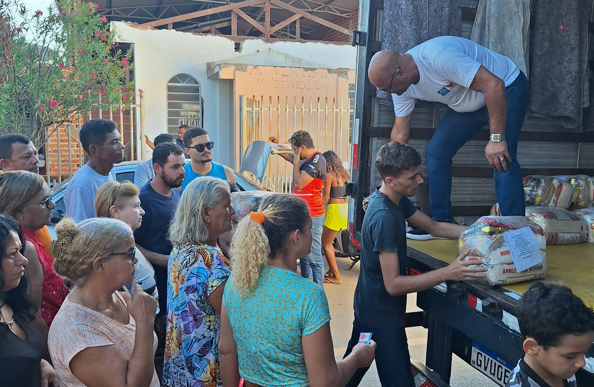

Projeto Futuro na Escola

O Futuro na Escola atende mais de 150 crianças semanalmente com reforço escolar, oficinas de tecnologia e suporte psicopedagógico no contraturno escolar.

O Futuro na Escola atende mais de 150 crianças semanalmente com reforço escolar, oficinas de tecnologia e suporte psicopedagógico no contraturno escolar.
Sua dedicação faz toda a diferença. Siga os passos abaixo para fazer parte da nossa rede:
Sua contribuição garante a continuidade das nossas oficinas e compras de suprimentos diários.
Sim! Aceitamos doações de alimentos não perecíveis, livros infantis, materiais escolares e eletrônicos em bom estado de funcionamento.
Sim. Todos os voluntários registrados que cumprem o período mínimo de 30 horas recebem certificado oficial de participação.